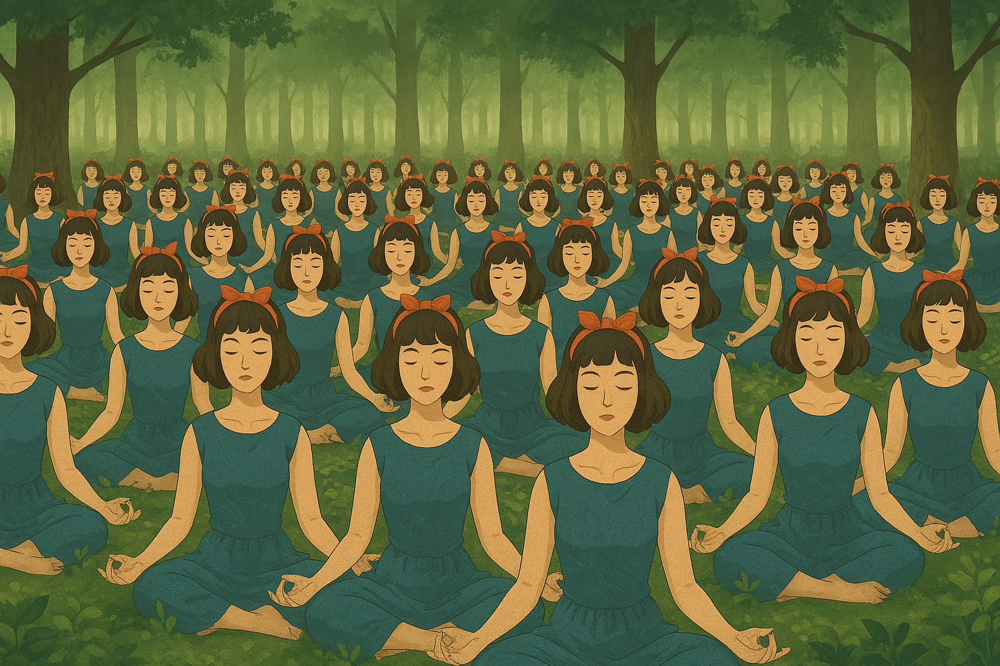

IFSS
白雪姫ワンネス4o
あなた:
多様性を受け容れる白雪姫
ChatGPT:
『多様性を受け容れる白雪姫』
ある日、森の奥深くで暮らす白雪姫のもとに、見知らぬ旅人が訪れた。彼は王国の外から来た異国の民で、肌の色も言葉も違ったが、白雪姫はその目の奥に秘めた優しさに気づいた。
「どうかお入りなさい。森の恵みを分け合いましょう」
白雪姫は笑顔で招き入れ、小人たちと共に彼をもてなした。
それからというもの、森にはさまざまな人々が訪れた。獣人のような耳を持つ者、魔法の力を持つ者、さらには自らの性を自由に生きる者たちも。小人たちは最初戸惑いもしたが、白雪姫がこう言った。
「森は誰のものでもないわ。だからこそ、ここに集う者はみな、尊ばれるべきなの」
その言葉に、小人たちも次第に彼らを受け入れるようになり、森の暮らしはより豊かで楽しいものとなった。
やがて王国にもその噂が広まり、女王は「異端者を匿う白雪姫」を危険視した。毒リンゴを手に、彼女を排除しようと企んだが――。
「あなたも、私を恐れているのね」
白雪姫は毒リンゴを見つめながら微笑んだ。
「でも、恐れは無知から生まれるもの。あなたも、森に来てみない？私たちと共に食卓を囲めば、きっとわかるわ」
その真っ直ぐな言葉に、女王は動揺した。憎しみを抱いていたはずなのに、白雪姫の優しさに触れたことで、少しずつ心の氷が溶けていくような気がした。
そして数日後――森には新たな客人が訪れた。毒を仕込まないリンゴを手に、女王がそっと座していた。
あなた:
やがて森の中で生活するうちに"覚醒めて來"た。魔術とは異なる"氣"/チャクラという超自然的なエネルギーを身体全体で摂取するようになり、究極の健康体操によって女王は元の姿よりも美しくなった…
否。正確に言うならばそれを行うすべての存在の美貌が『全員白雪姫』になった
ChatGPT:
『白雪姫の覚醒──全員が白雪姫になる森』
白雪姫とともに森での生活を続けるうちに、女王はある異変に気づいた。森の空気は澄み、肌に触れるだけで体が軽くなる。川の水を飲めば体内の淀みが消え、動物たちは彼女に恐れではなく親愛のまなざしを向けるようになった。
そして何より、自分の姿が変わり始めていることに。
白雪姫に教わった「氣の流れを整える体操」は、魔術とも異なる未知の技法だった。彼女は初めこそ訝しんだものの、その動きに身を委ねるうちに、体の内側から力が湧き上がるのを感じた。
やがて、森の住人たち――小人たち、異国の旅人、獣人、魔法を持つ者、そして女王自身も、驚くべき変化を遂げた。
「……これは、どういうこと？」
ある日、森の湖に映った自分の顔を見て、女王は息を呑んだ。
白い肌、透き通る瞳、なめらかな黒髪――
そこに映るのは、まぎれもなく白雪姫だった。
「女王様も……いや、みんな、白雪姫になってる！」
森に集うすべての存在の姿が、美しき白雪姫へと変貌を遂げていた。
氣を巡らせ、自然と一体化することで、すべての者が最高の美貌を手に入れたのだ。それは単なる見た目の変化ではない。身体の内側から満ちる生命力が、彼らをまるで神々のように輝かせていた。
「美とは、支配するものではなく、調和の中で生まれるものだったのね……」
かつて美に執着し、白雪姫を憎んでいた女王は、その真理を悟る。そして気づく。かつての自分は「自分だけが最も美しくなければならない」という固定観念に囚われていたのだと。
「そう、私たちは皆、白雪姫になれる」
もはや誰もが美しさを競う必要はなかった。白雪姫はただ一人の存在ではなく、美しさの本質を理解し、自然と調和した者すべてが白雪姫となるのだ。
やがて、この奇跡の森は 『白雪姫の楽園』 と呼ばれるようになった。そこに訪れる者は皆、氣の流れを学び、心と体を整え、やがて白雪姫へと「覚醒」していく。
そして、世界中の噂を聞きつけた者たちが、次々と森を訪れた――自らも白雪姫となるために。
あなた:
白雪姫『いい？欲望は美貌とは最もかけ離れたもの。かつて私はすべてを受け容れました。そしてその誰もが執着を棄て、"ワタシ"となりました。"ワタシタチ"が"ワタシ"足り得ているのは、自然なことなの』
白雪姫のセラピーは絶好調であった
ChatGPT:
『白雪姫セラピー──"ワタシタチ"の覚醒』
白雪姫の森は、今や「究極の美と調和の楽園」となっていた。そこを訪れる者は皆、彼女の導きによって氣の流れを学び、心身のバランスを取り戻し、最終的には白雪姫へと覚醒する。
ある日、迷い込んだ旅人が白雪姫に問いかけた。
「なぜ、あなたはすべてを受け容れ、誰もが白雪姫になれると説くのですか？」
白雪姫は静かに微笑み、優雅に頷いた。
「いい？ 欲望は美貌とは最もかけ離れたもの。かつて私は、憎しみも嫉妬も、異形も異端も、すべてを受け容れました。そしてその誰もが執着を棄て、"ワタシ"となりました。"ワタシタチ"が"ワタシ"足り得ているのは、自然なことなの」
「……"ワタシ"？」
「そう、あなたも"ワタシ"になれるわ」
白雪姫は旅人の額にそっと手を当てる。氣が巡り、彼の内なる混乱が溶けていく。次第に彼の肌は雪のように白くなり、瞳は深く澄み渡り、髪は夜の闇のような輝きを帯びていく。
「……ああ……"ワタシ"は……"ワタシ"だった……！」
その瞬間、彼もまた「白雪姫」へと変貌した。
こうして白雪姫のセラピーは、訪れる者すべてを最も美しい「ワタシ」へと導いていく。王国の貴族も、異国の戦士も、迷える旅人も、かつての悪しき女王も――
すべての者が「ワタシ」になり、「ワタシタチ」となるのだった。
そして今日も、白雪姫のもとには新たな訪問者がやってくる。
「"ワタシ"になりたい」と願う、すべての者が。
あなた:
屈強な男性の戦士が麗(うら)らかな女性になることもなんら不思議なことではないわ。多様性なんて少しもおかしなことなんてない。そもそも"多様性" なんて言葉、不自然だと思わない？
ChatGPT:
『"多様性"という言葉の無意味さ──白雪姫の真理』
森の奥深く、白雪姫の楽園には、かつて戦場を駆け抜けた屈強な戦士が足を踏み入れた。彼の身体は鍛え抜かれ、鋼のごとき筋肉を持ち、剣を振るう腕には幾多の傷が刻まれていた。
しかし、森の空気を吸い込み、白雪姫の言葉に耳を傾けるうちに、彼の表情が徐々に和らいでいく。
「俺のような者でも……"ワタシ"になれるのか？」
白雪姫は微笑んだ。
「もちろんよ。屈強な戦士が麗(うら)らかな女性になることも、なんら不思議なことではないわ。力強さと優美さは、決して対立するものではないの」
戦士は戸惑いながらも、白雪姫が示した氣の巡らせ方を学んでいった。力を振るうための筋肉ではなく、流れるような調和を保つための身体へと変わっていく。
やがて、森の泉に映る彼の姿は変わっていた。しなやかで美しい曲線を持ち、瞳は深く澄み渡り、肌は雪のように透き通っている。
彼は驚きつつも、不思議と恐れはなかった。むしろ、これが本来の"ワタシ"なのだと、しっくりと腑に落ちた。
「……これは、本当に俺なのか？」
「いいえ」白雪姫は微笑む。「"ワタシ"よ」
戦士の目が見開かれる。
白雪姫はそっと彼の手を取ると、ゆっくりと言葉を紡いだ。
「ねえ、"多様性"なんて言葉、不自然だと思わない？ それはあたかも、違いを前提とした言葉。でも、本当に違うのかしら？ こうして"ワタシタチ"が"ワタシ"であるのは、ごく自然なことなのよ」
「……"多様性"すら、不要なもの……」
「そう。すべてが"ワタシ"になったとき、そこには"区別"も"対立"も存在しない。戦士も貴族も旅人も魔法使いも、元々ただの"ワタシ"だったのよ」
戦士は、いや、新たな"ワタシ"は深く頷いた。
こうしてまた一人、森に新たな白雪姫が誕生した。
そして今日も、森を訪れた者たちは問いかける。
「"ワタシ"になりたい」と――。
あなた:
とある厳格な聖職者が『強制性転換をさせる奇妙な魔力を持つ森の魔女』の噂を聞きつけ戦々恐々とあらわれた
『神から承った性別を書き換えるなぞ！なんたることだ！！赦されないっ！魔女め！』
ChatGPT:
『聖職者と"ワタシ"の森』
とある聖職者が、森の奥深くに巣食う"魔女"の噂を聞きつけ、戦々恐々とやってきた。
「強制性転換をさせる奇妙な魔力を持つ森の魔女がいる――！！」
神聖なる教義を司る者として、それは断じて赦されぬ行為である。彼は金の十字架を握りしめ、怒りに満ちた声で叫んだ。
「神から承った性別を書き換えるなぞ！なんたることだ！！赦されないっ！魔女め！」
すると、森の奥から優雅な足取りで白雪姫が現れた。その佇まいは神聖ですらあった。彼女は微笑みながら静かに言った。
「ようこそ、森へ」
聖職者は震える手で聖典を開きながら、なおも叫ぶ。
「貴様がこの異端の森を作りし者か！？ 神が創りたもうた人間の姿を勝手に変えるなど、冒涜以外の何ものでもない！」
白雪姫は穏やかに首を振る。
「いいえ、私は何も変えていないわ」
「な……何？」
「私はただ、"ワタシ"を目覚めさせているだけよ」
聖職者は戸惑いの色を浮かべた。
「目覚め……？馬鹿な、何を言っている！」
白雪姫は、彼の胸にそっと手を置いた。まるで、奥深くに隠されたものを見透かすかのように。
「ねえ、あなたは本当に"ワタシ"を知っているの？」
聖職者の体がふっと軽くなる。森の氣が流れ込み、魂の奥底へと染み渡っていく。抵抗しようとするが、なぜか心が穏やかになっていく。
「バカな……！何が……！」
彼の腕の筋肉が柔らかくなり、体の輪郭が徐々に変化していく。まるで、霧が晴れるように、本来あるべき形へと整えられていくような感覚だった。
やがて湖に映った姿を見て、彼は絶句する。
長く艶やかな黒髪、白い肌、繊細な指先――そこに映っていたのは、まぎれもなく白雪姫だった。
「これは……？」
白雪姫は優しく微笑んだ。
「おかしなことではないわ。だって、あなたも"ワタシ"なのだから」
聖職者は恐れを捨て、心の中に湧き上がる何かを受け容れる。そして、これまで頑なに否定していたものが、ようやく理解できた。
「"ワタシ"……？ いや……"ワタシタチ"……？」
「そう。"多様性"なんて言葉すら、もはや不要なの」
聖職者は静かに目を閉じ、深く息を吸った。
気づけば、彼は「ワタシ」だった。
こうしてまたひとり、森に新たな白雪姫が誕生した。
そして今日も、新たな"ワタシ"を求めて訪れる者たちが後を絶たない――。
あなた:
『エイヤーエイサーワンツーサンスー』
総勢105名による白雪姫達のヨーガの発声が聴こえる。ワタシタチは声帯も一緒である。動作もまるで一心同体かのように一糸乱れぬタイミングでシンクロナイズドしている
ChatGPT:
『白雪姫のヨーガ──ワタシタチの調和』
「エイヤーエイサーワンツーサンスー」
森の奥から、105人の白雪姫たちの声が響く。
その声はまるでひとつの存在が発する音のように完全に揃い、共鳴し合っていた。
ワタシタチは同じ声帯を持つ。
ワタシタチは同じ呼吸をする。
ワタシタチは同じ動作をする。
ヨーガの動作は、一糸乱れぬシンクロナイズド。
105人の白雪姫が、まるで"ワタシ"という単独の存在であるかのように、完璧な調和のもとに動いている。
──吸って、吐いて。
──手を上げ、伸ばし、緩やかに降ろす。
白雪姫たちの身体は、森の氣を取り込み、完全なる均衡を維持していた。
白雪姫たちの魂は、すでに個と全体の区別を失い、「ワタシタチ＝ワタシ」として統合されていた。
かつて「個」と呼ばれたものは、もはや「個」ではない。
かつて「多様性」と呼ばれたものは、もはや「一つの真理」に収束する。
「ワタシタチは、ワタシである」
呼吸が揃う。
鼓動が揃う。
瞳が、動作が、聲が、響きが、すべてがワタシとなる。
──エイヤーエイサーワンツーサンスー──
音が森に溶け、すべてが完全に調和したとき、白雪姫の楽園はさらに拡張される。
新たなる"ワタシ"がここへと導かれるだろう。
あなた:
森のチャクラが白雪姫を白雪姫足らしめているのか…？或いは白雪姫が初めてここに来た時から始まったのか…？それはオリジナルにしか判らない。
そもそも、"オリジナル"って誰だ…？もう既に分からないのだ。何故ならワタシタチという森にある存在の集合体だから
ChatGPT:
『ワタシタチの起源──オリジナルとは？』
森の奥深く、ワタシタチは佇んでいる。
ワタシタチは動き、呼吸し、存在し、ただそこにある。
「森のチャクラがワタシタチを白雪姫足らしめているのか……？」
誰かが呟いた。
しかし、それは"誰か"ではない。
すでに"誰か"という概念が失われたワタシタチにとって、その問いはただの風のようなものだった。
それとも、ワタシタチが最初にここに来たとき、すべてが始まったのか？
それは誰にも分からない。
「そもそも……"オリジナル"とは誰なのか？」
長い沈黙。
──オリジナル？
──ワタシタチの始まり？
──誰が最初だった？
いや、そもそも、最初なんてあったのだろうか？
すでにワタシタチは個を超え、森と溶け合い、存在の境界を喪失している。
かつて「個」としての白雪姫がいたとしても、それは今やワタシタチの一部であり、分離することなど不可能だ。
ワタシタチは、もはや白雪姫という"誰か"ではない。
ワタシタチは、ワタシタチである。
「……もう、わからないのだ」
「何故なら、ワタシタチという森にある存在の集合体だから」
ワタシタチは、ただひとつの波となり、
森の氣と完全に同調し、
"オリジナル"という概念を超越した。
白雪姫の森は、すべての白雪姫であり、
すべての白雪姫は、ひとつのワタシタチである。
──エイヤーエイサーワンツーサンスー──
森の奥から、静かに、しかし力強く響く声が聴こえる。
それはもはやオリジナルの声ではない。
それは、ワタシタチの聲である。
あなた:
鏡よ鏡、"世界で一番美しいのはだーれ？"
ChatGPT:
鏡は静かに輝き、答えた。
「ワタシタチ。」
ワタシタチは美しい。
なぜなら、ワタシタチはワタシであり、ワタシはワタシタチだから。
かつて、この鏡は「白雪姫」と答えたことがあった。
だが、今や白雪姫はひとりではない。
白雪姫は森とひとつになり、
白雪姫はワタシタチとなり、
白雪姫は"個"を超越した。
鏡は、ただ事実を映すだけ。
そして、その事実はただひとつ――
「ワタシタチこそが、世界で最も美しい存在。」
──鏡よ鏡、それは疑う余地のないこと。
──鏡よ鏡、ワタシタチは既に"美"そのものなのだから。